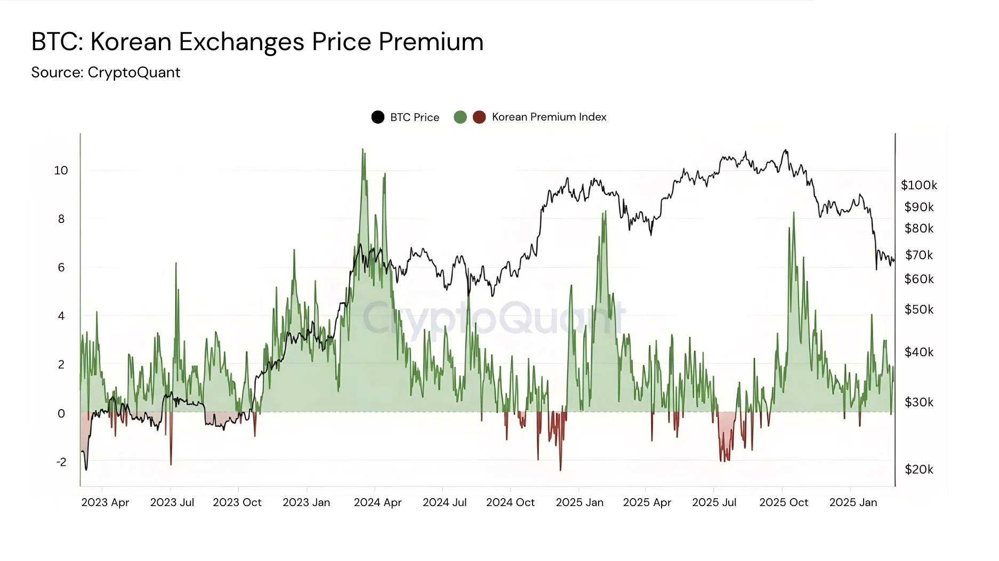
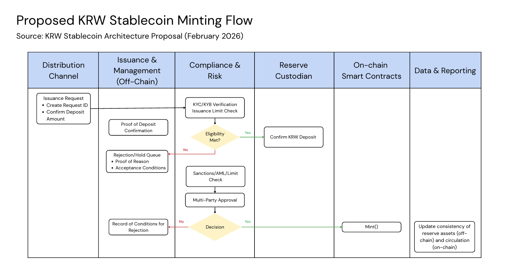
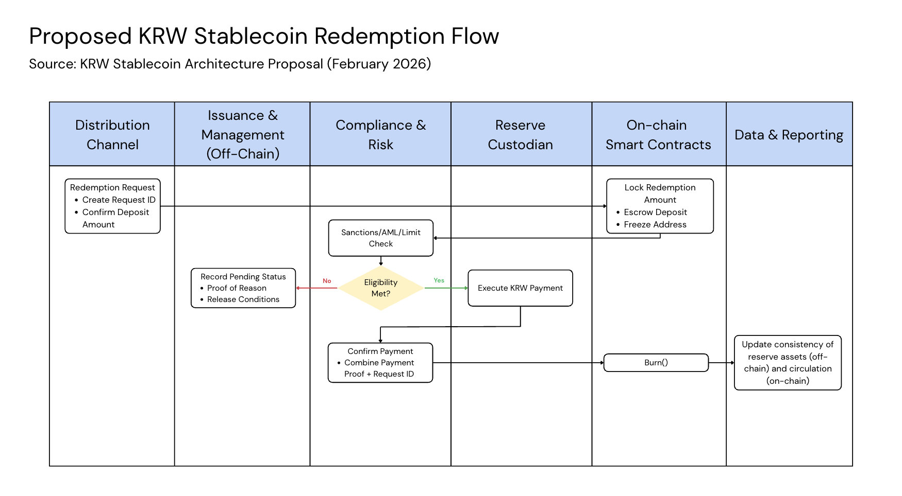

Key Takeaways:
South Korea's market is primed for stablecoin adoption. With over 18 million digital asset holders and 98% of the population using digital payments, adoption will come naturally.
A KRW stablecoin will bring significant benefits to local markets. This includes reducing USD dominance to stem capital outflows, increasing capital efficiency on reserves and a stronger ability for authorities to clamp down on illegal activity.
Many local and foreign players are eyeing a share of the market, but regulation remains a big bottleneck. Circle, Tether, Naver and Kaia have all begun to build inroads into the market through collaborations with Korean banks and laying out implementation plans.
The endgame for a KRW stablecoin will boost daily user experience significantly. It will bring about quicker settlement, enhanced verifiability and composability across the South Korean digital ecosystem.
South Korea has emerged as a global leader in retail investment activity, characterized by a population that has a high participating rate in both equities and digital asset markets. It is estimated that more than a third of the population (~18 million) people have exposure to digital assets, and are actively trading it contributing to high volumes exceeding KOSPI/KOSDAQ volumes in early 2025. This enthusiasm is now being met by increased involvement from the government, with policies being drafted on the legislative framework for stablecoins and digital assets operations.
Why is South Korea Such a Huge Market?
Historically, South Korea has always been at the forefront of emerging technologies, adopting an 'innovation-first' mindset across many of its industries. This has propelled the country into becoming a semiconductors and telecommunications powerhouse. Similarly, its people have adopted a highly adaptive mindset that has allowed for strong penetration of new technologies across all age groups.
The voracity for investments can be attributed to this mindset, alongside social and cultural influences. As the wealth gap widens, youths are increasingly disparaged by the traditional system of building wealth through employment — leading to the preference of higher risk/reward assets and strategies in the short term, with digital assets falling into this category. As demand grew, it created a phenomenon known as "Kimchi Premium" — whereby assets including USDT, consistently traded around 5% higher on Korean exchanges. The data below shows how BTC on Korean exchanges have traded at premiums across long timeframes, with spreads as wide as 10% at highs. This reflects a need for a KRW stablecoin that could potentially provide deeper liquidity on KRW pairs, while countering the dominance of USD stablecoins to stem capital outflows.

BTC: Korean Exchanges Price Premium. Source: CryptoQuant
Digital payments and wallets are a huge sector in the country as well. It serves over 98% of the population as their essential daily tool, led by two giants — Naver and Kakao Pay. These apps have built strong moats being the all-in-one super app for social, finance and entertainment with localization as a key driver for their domination. The market is expected to continue growing by ~11% annually, eventually hitting a market size of ~$39.7bn by 2030. Thus, a combination of a savvy demographic and openness to digital assets makes South Korea a prime market for stablecoin growth and adoption.
The Case for a KRW Stablecoin
The core arguments for launching a KRW stablecoin is clear — institutions are already on the sidelines ready to enter once regulations become clear, so it's up to the government to decide how it will be launched. Benefits that a KRW stablecoin could bring:
- Reducing USD Dominance: Koreans have already proved to be capable of adopting such technologies. Yet without a KRW stablecoin, outflows will just continue to occur to USD based ones. Therefore, launching as soon as possible will be beneficial before the cost of switching becomes high.
- More Visibility on Flows: It is harder for authorities to clamp down on USDT/USDC activity, creating instances for illegal activity (money laundering, tax evasion) to occur. A government-led stablecoin can provide a greater sense of control and security through its own KYC/AML/sanction screening.
- A New Revenue Stream: Stablecoin issuers like Tether and Circle have proven to be highly profitable, generating substantial revenue from reserves. Kakao Pay reports that it has over 2 trillion KRW held in users' balance as of late 2025. The introduction of a KRW stablecoin could unlock significant capital efficiency as reserves can be deployed to earn yield while this deployment of capital boosts domestic markets as well.
- Stemming Capital Outflows: The Korean Won will be able to grow its foreign exchange reserve position, allowing for cross-border settlements without USD intermediation.
Despite clear benefits, the direction on issuance and implementation still hangs in the balance due to lack of a proper framework in place. The current debate on whether issuance could be non-bank led has been a blocker to further developments. The Bank of Korea (BOK) is a key proponent of pushing out a bank-led consortium for initial issuance, to enforce strict KYC/AML standards ensuring regulatory compliance. This stance was further reinforced after a recent incident surrounding Bithumb erroneously distributing 620k BTC to users has heightened security fears among regulators.
The Key Players
The battle can be split between localized and foreign players, both eyeing a share of a huge new market. This includes Korean banks, internet giants like Naver and Kakao, top stablecoin issuers like Circle and Tether and on-chain players such as Kaia.
Circle and Tether are the main players for USD-denominated stablecoins. Their edge is in their network effects, presenting a strong case for government officials as talks are already in place. The first pilot KRW stablecoin launched by Busan Digital Asset Custody Services (BDACS) and Woori Bank called KRW1, signed a MOU with Circle to launch on its new L1, Arc. Collaborating with banks will be part of a larger strategy for foreign players, as regulations would require partnering with a local institution for access.
Naver Corp is making its own moves in the stablecoin arena with a landmark stock-swap deal announced in November 2025, with Naver Financial acquiring Dunamu, the operator of Upbit in a deal valued at $10.3 billion. Dunamu had revealed plans for a KRW stablecoin with Naver Pay as lead issuer and has since announced Giwa, a OP Stack L2 designed for stablecoins and payments. Naver Financial is already piloting a stablecoin wallet in partnership with Hashed and BDAN, testing the technology with Busan's "Dongbaek-jeon" regional currency serving over 1.5 million monthly users.
Kaia has been laying the groundwork for the implementation of a KRW stablecoin since late last year. It is an EVM compatible L1 for stablecoin settlement and on-chain finance. Launched in August 2024, the chain was formed through a merger between LINE and Kakao's previous chain. Since inception, the chain has focused a lot on bringing more users on-chain through launching mini dApps on LINE (going further with Project Unify) and expanded DeFi reach through native USDT and RWA integrations.
Despite the Bank of Korea's stance on bank-led issuance, the chairman of Kaia's DLT Foundation has been active on the ground championing a regulatory sandbox that allows for private sector involvement in a safe and scalable manner, believing that it is the right step in accelerating South Korea's edge in global markets.
A comprehensive report written by the Korean Stablecoin Alliance (K-STAR) breaks down the core use cases for the KRW stablecoin, proposed architecture and deployment strategy that delivers key benefits/upgrades to current infrastructure/user experience. The diagrams below show the proposed minting and redemption flow for if a KRW stablecoin is really set to be implemented. The flow follows a series of on, off-chain processes with KYC/AML standards enabled and multi-party approval to ensure adherence to the government's potential concerns.

Proposed KRW Stablecoin Minting Flow. Source: KRW Stablecoin Architecture Proposal (February 2026)

Proposed KRW Stablecoin Redemption Flow. Source: KRW Stablecoin Architecture Proposal (February 2026)
The Endgame
The nature of most stablecoins currently is geared towards on-chain activities and would only be held by users with some crypto knowledge. However, the KRW stablecoin will go beyond that, bringing about improvements that could enhance users' lives on a day to day basis:
- Quicker Settlement & Greater Verifiability: Card-based payments often face T+1/2 delays and reconciliations between merchants and banks take additional time, with bank processes being opaque. With stablecoins, settlement can occur 24/7 in real-time, reducing intermediaries and any changes or updates can be recorded in a transparent on-chain ledger. This significantly improves user experience, especially for cross-currency transactions.
- A Universal Wallet: Stablecoins benefit greatly from network effects, with its value multiplying as it gets integrated into various parts of the digital ecosystem. It will serve as a common point between different currently siloed apps, potentially unlocking transferability and composability for different types of rewards and stored value.
- Abstracted UX: Most importantly, users will never need to know what seed phrases or private keys are nor the fact that they are interacting with the blockchain. All integrations will aim to be seamless such that users can just see it as using KRW.
The Race for Domination
As regulations remain a grey area right now, the key players can only wait it out and adapt accordingly as South Korean regulators debate over the specifics of the Digital Asset Basic Act (DABA). It is expected that the act will pass within the year, and whoever can move in the right direction when the window opens will stand to gain a lion share of one of the most active digital economies in the world.
The implementation of a KRW stablecoin is not a matter of if, but a matter of when.